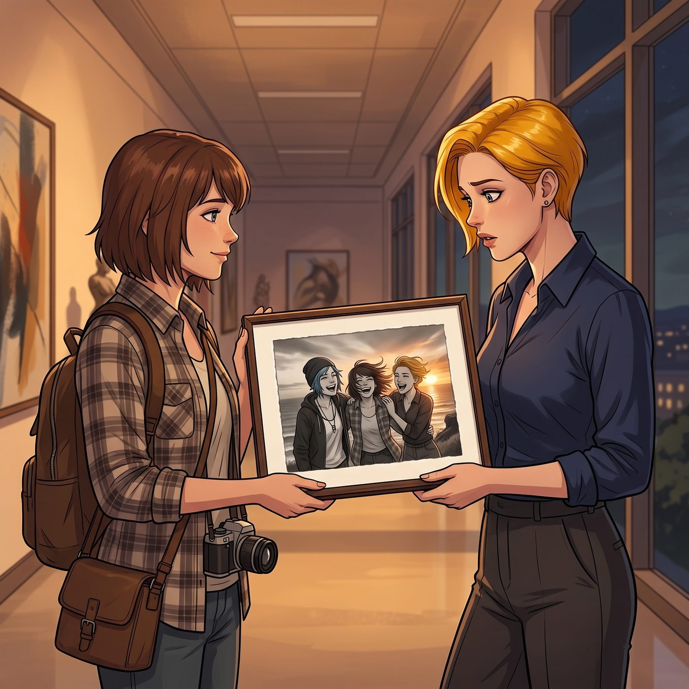
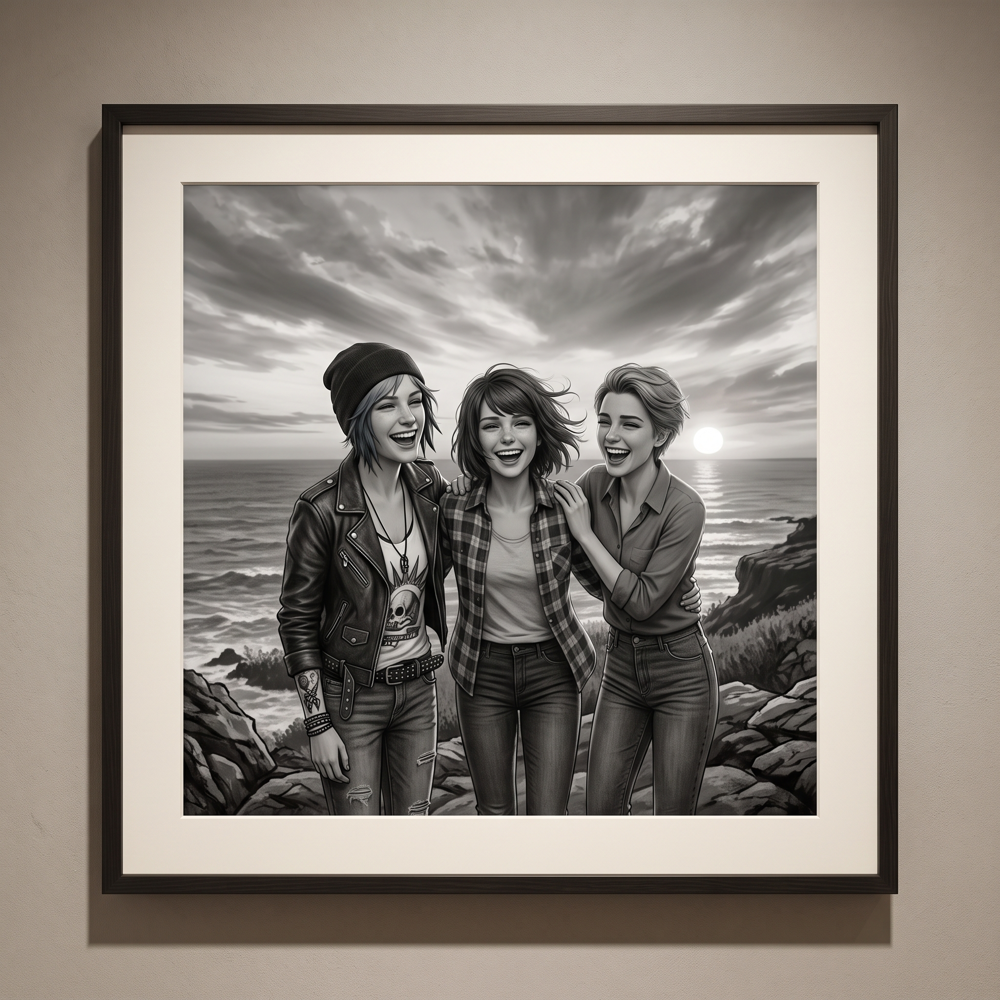

迂迴的索求


一、走廊堵人
懸崖兜風後的隔天下午,Victoria 踩著高跟鞋,在藝術樓走廊堵住了落單的 Max。
她絕不可能直接開口說「請給我一張合照」——那太過赤裸,太過像是承認自己需要什麼。於是她抱著手臂,眼神飄向窗外,語氣裡帶著極度漫不經心的偽裝。
「考菲爾德,」她開口,「妳昨天在懸崖上按快門時,背景的光比嚴重失衡,夕陽逆光至少過曝了兩檔。作為 Chase 家族未來的藝術品收藏顧問,我有責任對這張失敗作,進行『質量存檔與災難評估』。」
二、拆穿與嘴硬
Max 眨了眨眼,忍住笑意:「所以……妳是想要那張照片?」
Victoria 臉頰微不可察地紅了一下,立刻拔高聲調反駁。
「我是在保護妳的個人作品集,不被低劣構圖玷污!」她義正詞嚴地說,「而且,那張照片裡我的大衣被海風吹得變形了,要是流傳出去,會影響我的時尚聲譽。洗出來後立刻交給我銷毀——我是說,由我親自封存。」
三、渴望的底色
Max 沒有拆穿她那套漏洞百出的說辭,只是笑著點點頭,答應會盡快洗出來給她。
Victoria 站在原地,看著 Max 轉身離開的背影,心裡那份剛才刻意用尖銳話術包裝起來的情緒,漸漸鬆懈下來。
她想要的,從來不只是一張照片。這幾年,她身邊從不缺乏願意奉承、願意圍繞著她家族財富打轉的酒肉朋友——那些笑容底下,永遠精準地計算著能從她這裡換取什麼利益。而昨天那個懸崖上,海風凌亂、笑聲毫無保留的瞬間,是她很久很久沒有真正體驗過的東西——一種不摻雜任何算計、單純因為「在場」而感到快樂的真實情誼。
她不知道該怎麼開口說出這份渴望,只能用這套彆扭的、拐彎抹角的話術,笨拙地伸手,想留住那麼一點點,金錢和地位永遠買不到的、真心的溫度。
四、無價的收穫
當晚,Max 把精心沖洗、用純棉無酸紙裝裱好的黑白相片遞給她。
照片裡,三個女孩被海風吹亂了頭髮,在夕陽下並肩大笑的瞬間,充滿了一種毫不做作的生命力。
Victoria 接過照片時,指尖微微停頓了一下。她沒有像往常那樣,挑剔地指出任何一絲構圖或曝光的瑕疵,只是靜靜地看了很久,才把它小心翼翼地放進隨身名牌手袋的最內層,貼近心口的位置。
那是她所有昂貴的私人訂製珠寶、限量跑車,都換不來的東西——一段真正卸下所有防備、屬於青春本身的、真實印記。